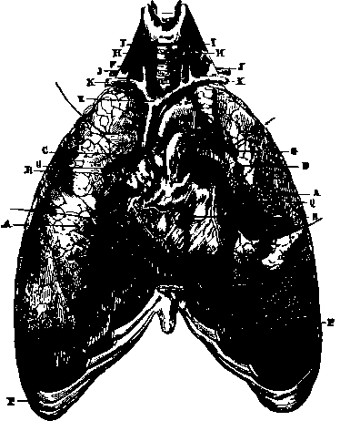

Organs Of Respiration. Lungs
Description
This section is from the book "Wonders Of The Human Body", by Auguste Le Pileur. Also available from Amazon: Wonders of the Human Body.
Organs Of Respiration. Lungs
As their name indicates (pneumon, from pneo, I breathe), the lungs are the essential organs of respiration. They are two in number, though they receive the air by one canal and the blood by a single vessel; they may be considered as the terminal expansion of the ramifications of the trachea, or as the two heads of a single tree. Placed in the chest, of which they occupy the larger part, and to the shape of which they are moulded (fig. 23, p. 81), they represent two irregular cones, resting their bases on the diaphragm, filling with their apices the two conical spaces lined by the pleura at the top of the chest, and separated by the heart and the mediastinum. The right lung is divided in its length into three lobes by two oblique clefts, and is shorter and larger than the left, which has but two lobes. The internal face of the lungs is concave; about the middle the bronchia unite with the pulmonary vessels to form the root of the lungs; their base takes the form of the convexity of the diaphragm; their edges, thin in front and at the bottom, thick and rounded behind, partially cover the heart, and fill the space which separates the diaphragm from the walls of the thorax, as well as the groove between the ribs and the vertebræ. The entire surface of the lungs is smooth and moistened with serous secretion.
Fig. 24. Lungs and heart.
A. Lungs with the anterior edges turned back to show the heart and bronchia.
b. Heart.
C. Aorta.
d. Pulmonary artery.
e. Ascending vena cava.
f. Trachea.
G, G. Bronchia. H.H. Carotid arteries. I, I. Jugular veins. j, j. Subclavian arteries. K, K. Subclavian veins. P, P. Costal cartilages.
Q. Anterior cardiac artery. R. Right auricle.
The tissue proper of the lungs, or pulmonary parenchyma, is of a grayish rose colour, soft, spongy, elastic, crepitating under pressure in consequence of the air it contains. It is divided into polyhedral lobules, very variable in form and in the disposition of their facets, which permit exact juxtaposition without intervals; and they are separated by partitions of cellular tissue, independent and without communication with each other. Each one of these lobules is formed of a cluster of little cavities called pulmonary vesicles, constituting a cul-de-sac, and receiving the air from the bronchial ramifications of which they are the terminal expansions. The diameter of these pulmonary vesicles is from one-seventieth to one hundred and fiftieth of an inch; from this we can judge of the tenuity of their walls, in the substance of which notwithstanding ramify the capillary vessels. Each lobule represents a little lung, a diminutive of the entire organ. A bronchial twig and minute artery run into it, veins and lymphatic vessels leave it On the surface the lobules appear bounded by their intermediate partitions, and they form a mosaic of which the mottled colouring varies from rose to black. These black particles are principally composed of a carboniferous substance which penetrates the lung either with the air or with the blood, and which is called pulmonary carbon.
The lungs are supplied with air through the larynx, trachea, and bronchia. The larynx, the organ of the voice, of which we shall speak later, is continuous below with the trachea. This is a cylindrical tube flattened behind; it is composed of a series of cartilaginous rings united by a fibrous membrane, and lined with a mucous membrane; it is placed in the anterior portion of the neck, and passes vertically from above downward. The rings of the trachea do not extend quite round it; interrupted in their circuit towards the posterior fourth of the tube, they are, properly speaking, only segments of a circle. They number from sixteen to twenty, and produce a corresponding number of protuberances on the surface of the trachea, which is thereby rendered rough and wavy to the touch. It is from this circumstance that it derives its name (trachys, rough). Formerly it was confounded with the arterial vessels, which were supposed also to be designed to contain air.
Fig. 25. Section showing the ramifications of the bronchi in the lungs. A. Trachea. B, C. Bronchi. D, D. Bronchial tubes.
At the height of the third dorsal vertebra, the trachea divides into two portions, which are called bronchi, which on reaching the root of the lungs divide into numerous ramifications designated bronchia or bronchial tubes, and becoming more and more slender. Of the two principal bronchi, the right is larger than the left, and the left is twice the length of the right They are both, as well as their ramifications, up to a certain limit, composed of fibrous membrane and incomplete cartilaginous rings. When their diameter has decreased to less than one-fiftieth of an inch, they no longer have the cartilaginous rings, and the mucous membrane cannot be separated from their walls. They continue to subdivide, and terminate, as already stated, in the pulmonary vesicles, the agglomeration of which in clusters forms the lobules of the lung.
Independently of the artery and pulmonary veins by which the venous blood reaches the lung, and, transformed into arterial blood, is returned to the heart—that is, besides those which serve for the sanguification and circulation—the bronchial veins and arteries carry the blood through the lungs which is destined to nourish the organ itself, and it is probable that the tissue proper of the lung uses for itself part of the red blood formed in its cavities. Numerous lymphatic vessels are also found in the lungs. The nerves which are distributed through the lungs come from the pneumogastric and the ganglionic nervous system.
Continue to:
- prev: Pleura
- Table of Contents
- next: Respiration